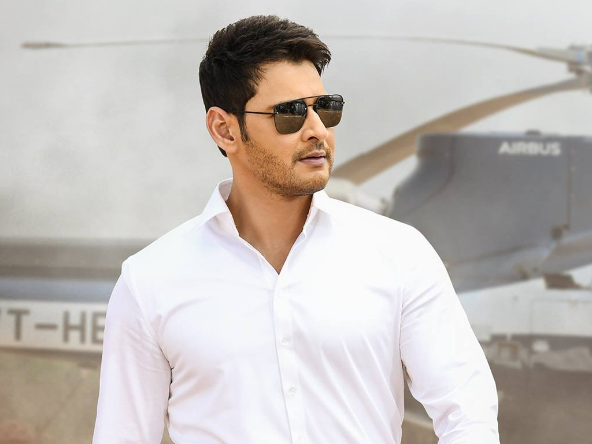
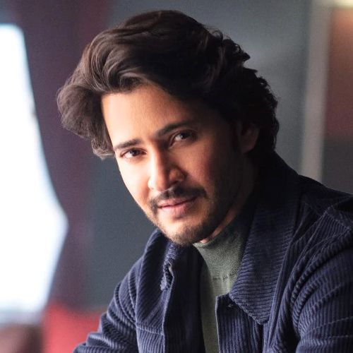
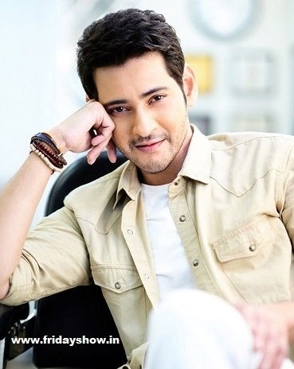

The debut movie of Mahesh Babu as a lead actor was Raja Kumarudu. The movie was released in the year 1999. It was an important film in the career of Mahesh Babu. The film introduced him as a hero in the Telugu film industry. Raja Kumarudu was directed by K. Raghavendra Rao. The film was produced by Ashwini Dutt under the Vyjayanthi Movies banner. The movie starred Mahesh Babu and Preity Zinta in the lead roles. Preity Zinta made her debut in Telugu cinema with this movie. The story of the film revolves around a rich young man. The hero falls in love with a simple village girl. The film combines romance, comedy, and emotional scenes. Audiences enjoyed the entertaining storyline of the movie. Mahesh Babu impressed viewers with his performance. His acting looked natural and confident on screen. Many people appreciated his charming personality. The film also contained several beautiful songs. The music of the movie was composed by Mani Sharma. The songs became very popular among the audience. The colorful song sequences attracted many viewers. The cinematography of the film was visually appealing. The movie had many entertaining moments. Comedy scenes in the film made the audience laugh. Emotional scenes also connected well with viewers. Mahesh Babu performed emotional scenes very well. The film received positive responses from audiences. Critics also appreciated the debut performance of Mahesh Babu. The movie performed well at the box office. It became a commercial success. The success of this movie helped Mahesh Babu gain recognition. Many people began noticing his acting talent. Fans started supporting his movies after this debut. Directors and producers showed interest in working with him. The film played an important role in shaping his career. Mahesh Babu gained confidence after the success of the movie. His screen presence impressed many viewers. The film created a strong foundation for his acting career. Many fans still remember Raja Kumarudu as his debut film. The movie remains a memorable milestone in his life. Because of this film Mahesh Babu started receiving many film offers. His popularity slowly increased after the movie’s success. He continued acting in many successful films later. Today Mahesh Babu is one of the biggest stars in Telugu cinema. Fans proudly remember Raja Kumarudu as the beginning of his journey. The debut movie opened the door to a successful career in films.
Mahesh Babu has acted in many successful films during his career.
Several of his movies became huge blockbusters in the Telugu film industry.
One of his most famous movies is Pokiri released in 2006.
This movie was directed by Puri Jagannadh.
Pokiri became a massive hit and broke many box office records.
Mahesh Babu played the role of an undercover police officer in the movie.
Another popular movie is Okkadu released in 2003.
This film was directed by Gunasekhar.
Okkadu became a blockbuster and increased Mahesh Babu's popularity.
The action scenes and emotional story impressed many viewers.
Dookudu released in 2011 was another blockbuster movie.
The film was directed by Sreenu Vaitla.
It became one of the highest-grossing Telugu films at that time.
Srimanthudu released in 2015 is also a memorable film.
The movie was directed by Koratala Siva.
It carried a social message about village development.
Bharat Ane Nenu released in 2018 is another successful movie.
In this film Mahesh Babu played the role of a Chief Minister.
His performance was widely appreciated.
These films helped him become one of the top actors in the Telugu film industry.
He gained millions of fans through these movies.
1. Pokiri (2006) – Directed by Puri Jagannadh
2. Okkadu (2003) – Directed by Gunasekhar
3. Dookudu (2011) – Directed by Sreenu Vaitla
4. Srimanthudu (2015) – Directed by Koratala Siva
5. Bharat Ane Nenu (2018) – Directed by Koratala Siva
The first movie of Mahesh Babu as a lead actor was Raja Kumarudu. This movie was directed by K. Raghavendra Rao. He is one of the most respected directors in Telugu cinema. K. Raghavendra Rao has directed many successful movies. He is known for presenting actors in a stylish way. His films often contain colorful songs and beautiful visuals. Raja Kumarudu was released in the year 1999. The movie introduced Mahesh Babu as a hero. Audiences were excited to watch the son of actor Krishna. Mahesh Babu showed confidence in his performance. The director helped him act naturally in every scene. Raghavendra Rao guided him carefully during shooting. His experience helped Mahesh Babu improve his acting skills. The film had a good storyline and entertaining scenes. Many viewers appreciated the romantic scenes in the film. The movie also contained emotional moments. Mahesh Babu performed those scenes very well. The director encouraged him to give his best performance. The music of the movie was composed by Mani Sharma. The songs became very popular among the audience. The visuals of the songs were colorful and attractive. K. Raghavendra Rao is famous for his song picturization. He presented Mahesh Babu in a stylish manner. The movie attracted a large number of viewers. Audiences liked Mahesh Babu’s screen presence. His dialogue delivery impressed many people. The film performed well at the box office. Raja Kumarudu became a commercial success. This success helped Mahesh Babu gain popularity. Many directors noticed his acting talent. After this movie he received more film offers. The film played an important role in his career. Raghavendra Rao’s direction was highly appreciated. His experience helped the movie become successful. The movie created a strong first impression for Mahesh Babu. Fans started recognizing him as a promising actor. His charming personality attracted many viewers. The film had beautiful locations and cinematography. The director ensured every scene looked visually appealing. He also focused on presenting the hero strongly. The movie combined romance, comedy, and drama. This combination entertained the audience. Mahesh Babu’s performance was praised by critics. The director supported him throughout the project. His guidance helped Mahesh Babu feel confident on screen. Many people believed Mahesh Babu had a bright future. The film marked the beginning of his successful journey. The audience response was very positive. The movie collected good revenue at the box office. Raghavendra Rao’s filmmaking style impressed viewers. His films often focus on entertainment and emotions. He has worked with many famous actors. His experience helped new actors succeed. Mahesh Babu benefited from his guidance. The movie helped him build a strong fan base. Fans appreciated his acting and style. His screen presence became widely discussed. Raja Kumarudu became an important film in his career. The movie created a solid foundation for his future films. After this movie Mahesh Babu continued acting in many films. His popularity gradually increased. He started becoming a well-known actor. Directors trusted his acting ability. Producers were interested in casting him. Fans eagerly waited for his next movie. His career continued growing after this debut. Raja Kumarudu remains a memorable film. Many fans still remember his performance. The film is often mentioned as his successful debut. Raghavendra Rao is respected for launching many actors. He played a key role in shaping Mahesh Babu’s career. His filmmaking experience helped the movie succeed. The movie’s success gave Mahesh Babu confidence. He started believing in his acting abilities. This film changed his life and career. From this point he began his journey toward stardom. His dedication and hard work helped him grow. The audience continued supporting his movies. Mahesh Babu later became one of the biggest stars in Telugu cinema.
The first movie director of Mahesh Babu as a lead actor was K. Raghavendra Rao. He is one of the most famous directors in the Telugu film industry. K. Raghavendra Rao has directed many successful movies during his career. He is known for his unique filmmaking style. His films often include colorful songs and beautiful visuals. He has introduced many actors to the Telugu film industry. Many of those actors later became successful stars. When Mahesh Babu started his career as a hero, Raghavendra Rao guided him carefully. He helped Mahesh Babu understand how to act confidently in front of the camera. The director focused on presenting the new hero in a strong way. He worked closely with Mahesh Babu during the shooting of the film. His experience helped the young actor improve his performance. Raghavendra Rao is known for creating entertaining and family-friendly films. He believes that a good movie should entertain the audience completely. The director also focuses on emotional storytelling in his films. He carefully plans every scene before shooting. This helps the actors perform better in their roles. Raja Kumarudu was directed beautifully by him. The movie was released in 1999 and became successful. His direction helped the film become visually attractive. The songs in the movie were very colorful and memorable. He presented Mahesh Babu in a stylish and impressive manner. Audiences liked the way the hero was introduced in the film. The director ensured that the story remained entertaining from beginning to end. Many viewers appreciated the romantic and emotional scenes in the movie. The film also contained comedy scenes which made the audience laugh. Raghavendra Rao balanced all elements of entertainment in the movie. His direction helped create a strong first impression for Mahesh Babu. Critics praised the way he introduced the young actor. Because of this film Mahesh Babu became popular among audiences. The director’s experience played a big role in the film’s success. He is respected as a legendary filmmaker in Telugu cinema. His contribution to the film industry is very significant. He has directed films for many famous actors. Over the years he has earned great respect in the industry. Many people consider him a master of commercial filmmaking. His films often become memorable for their songs and visuals. Raja Kumarudu remains an important film in Mahesh Babu’s career. The success of this film helped Mahesh Babu continue his acting journey. K. Raghavendra Rao’s guidance helped shape the early stage of his career. Because of this successful debut Mahesh Babu later became a superstar. The director will always be remembered for launching Mahesh Babu as a hero.
Mahesh Babu is known for his stylish personality and handsome appearance. His photos are very popular among fans. Many fans collect his pictures from movies and public events. His images from Pokiri, Okkadu, and Dookudu are widely shared. Fans also like his photos from award functions and promotions. Mahesh Babu often appears in stylish outfits. His fashion sense is admired by many young fans. He also appears in advertisements and brand promotions. Many of his photos go viral on social media. He has millions of followers online. Fans often create posters and edits using his images. His movie stills show powerful action scenes. Some pictures show emotional moments from films. Others show his casual lifestyle and family moments. Mahesh Babu continues to inspire many people through his work. Below are some gallery images of Mahesh Babu.


